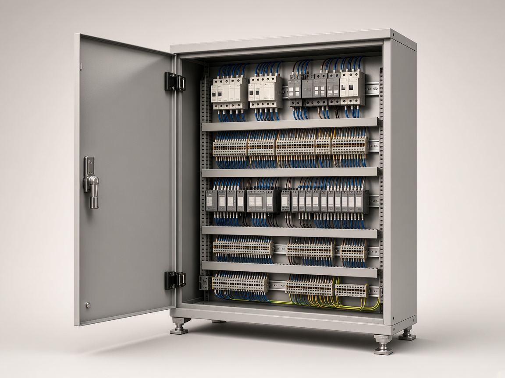
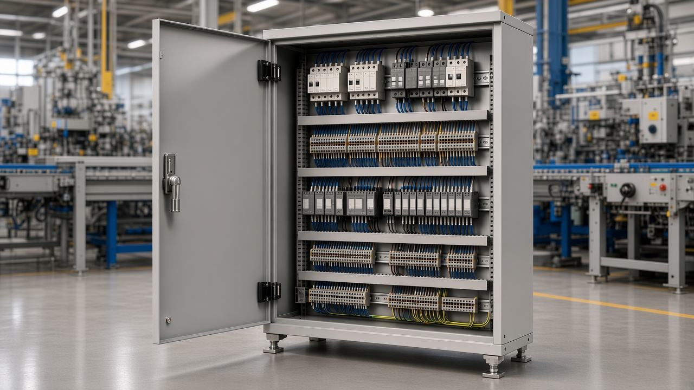

Поставка из Китая в Россию
Шкафы автоматики и комплектующие из Китая
Шкафы автоматики из Китая, компоненты для сборки шкафов, панели управления, релейная автоматика, блоки питания, клеммы и аксессуары для поставки в Россию.
Шкаф накопления энергии — другая позиция. Его запрашивают на странице аккумуляторов и накопителей. Здесь комплектующие шкафов управления.

Применение
Шкаф автоматики в производственном цехе

Ассортимент
Что входит в поставку для шкафов автоматики
Работаем с техническими заявками, спецификациями, фото шильдиков и списками MRO-запчастей. Подбор аналогов выполняется только после согласования параметров.
Основные позиции
- Комплектующие для шкафов управления и распределительных панелей
- Реле, блоки питания, клеммы, кнопки, индикаторы и измерительные приборы
- Вентиляторы, фильтры, кабельные вводы, DIN-рейки и монтажные аксессуары
- Сборные BOM-заявки для производств, интеграторов и сервисных служб
Как проходит поставка
- Проверяем техническое описание, количество и город доставки
- Уточняем наличие, срок производства или поставки
- Готовим коммерческое предложение и варианты доставки
- Согласуем упаковку, документы и отправку в Россию
Поисковые категории
Типовые запросы по направлению
Нужно КП по этой категории?
Отправьте модель, параметры или список позиций. Цена, срок и наличие подтверждаются только в письменном коммерческом предложении.
FAQ
Вопросы по поставке
Можно ли отправить полный список комплектующих для шкафа?
Да. Отправьте BOM, количество, технические параметры и город доставки. Мы разделим позиции по наличию, сроку поставки и вопросам для уточнения.
Работаете ли вы с мелкими смешанными заказами?
Да. Для шкафов автоматики часто нужны десятки небольших позиций, поэтому мы объединяем их в одну поставку.
Это страница шкафов накопления энергии?
Нет. Здесь шкафы автоматики и комплектующие для их сборки. Модули, стойки и шкафы накопления энергии описаны на странице аккумуляторов и накопителей. Наличие до проверки не гарантируется.
Где подтверждаются цена, срок и наличие?
Yucore Industrial Supply — направление Guangzhou Xiaoyu Import & Export Co., Ltd в Гуанчжоу. По категории «шкафы автоматики» цена, срок и наличие подтверждаются только в письменном коммерческом предложении. Заявку отправляют Summer на summer@yucore.ltd или в WhatsApp +86 150 1848 5957. До проверки позиция не считается доступной.
Другие направления